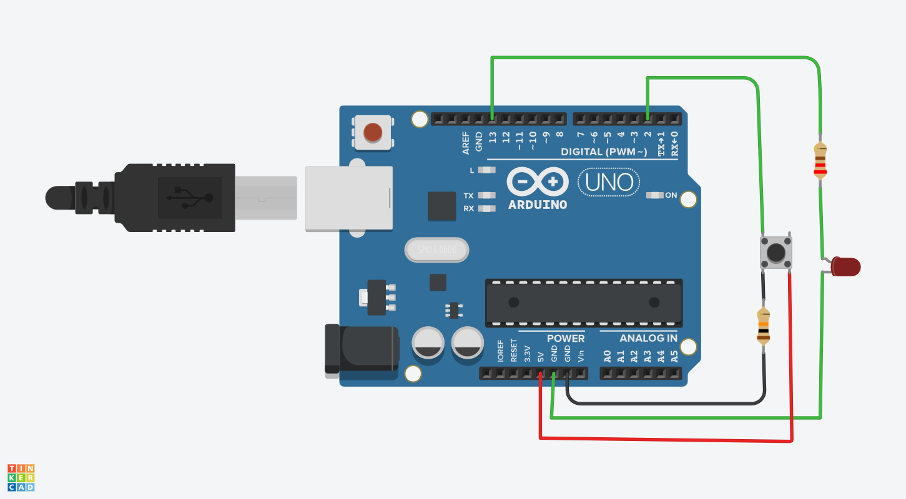
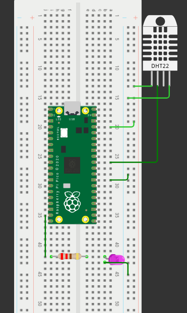

This week's objectives were to:
This week, we delved into the world of microcontroller programming and practical simulations, gaining a deeper understanding of how these devices function and how to develop software for them.
We used WOWKI and TINKERCAD for practical simulations.Before using the real hardware
We started by learning about the architecture and operation of microcontrollers, including their components, memory organization, and input/output interfaces. We also explored the different programming languages commonly used in embedded systems development, such as C and Python, and learned how to write and debug code for microcontrollers using these languages.
In addition to theoretical learning, we also had the opportunity to gain hands-on experience with microcontroller development boards and practical simulations. We used WOWKI and TINKERCAD to test and validate our code before deploying it on real hardware. This allowed us to identify and fix any issues in our code before working with physical devices, which can save time and resources.
the following is the link to our practical simulation projects:
Practical Simulation Projects TINKERCAD


Key learning outcomes from Week 3:
Overall, Week 3 was an exciting week of learning and hands-on experience in microcontroller programming and practical experiments, and I am eager to continue learning and exploring more advanced topics in the weeks ahead.
Next week, I will focus on exploring more advanced topics in embedded systems, such as real-time operating systems (RTOS) and advanced communication protocols, where I will learn how to develop more complex embedded applications that require real-time performance and advanced communication capabilities.